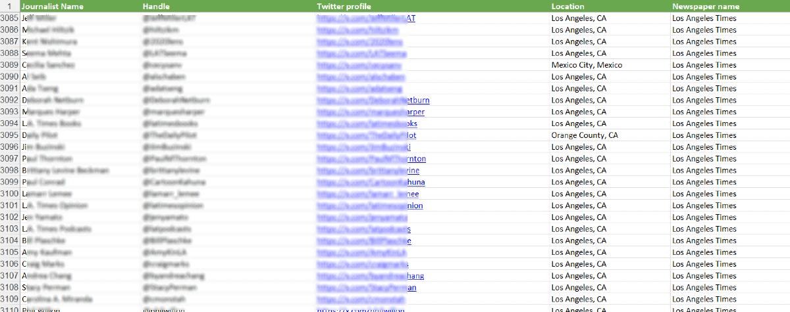
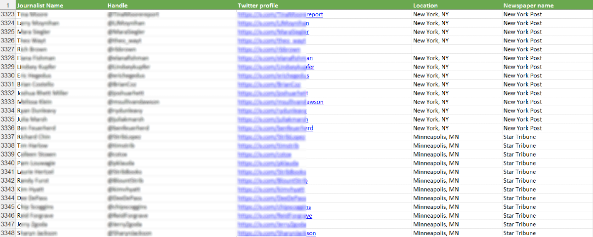
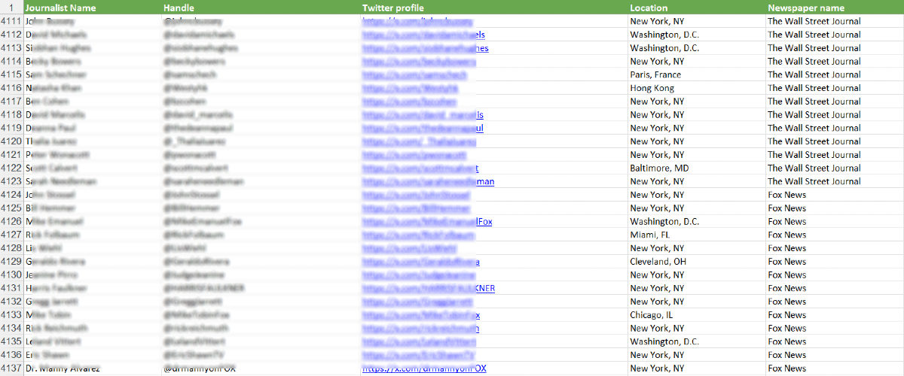
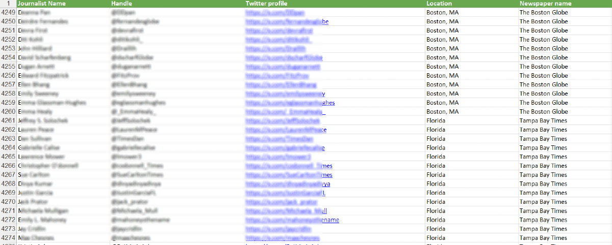
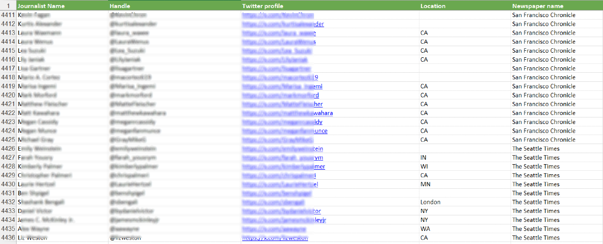
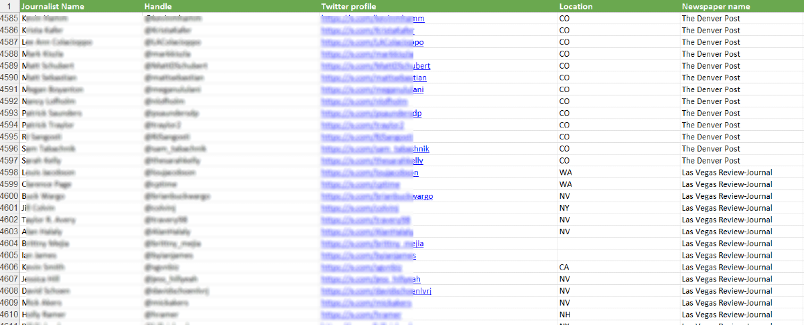
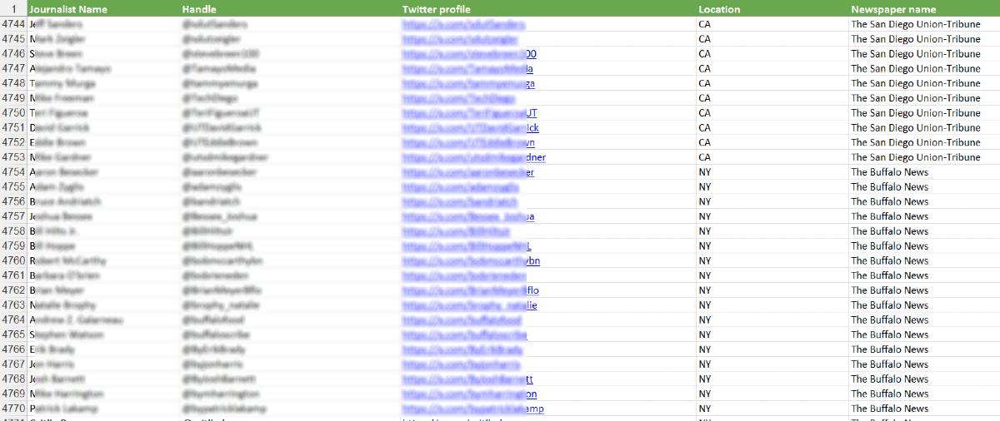
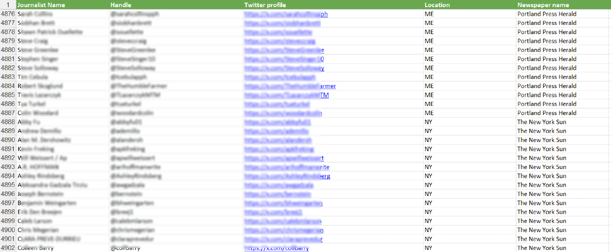

So, you've got a shiny new product or service that's just begging for attention like a puppy at a pet store. You've thought about sending out a press release, but let's be real—who reads those anymore? They're about as exciting as watching paint dry. Instead, let's talk about how you can grab the attention of 5000 journalists on Twitter and turn them into your product's biggest fans. Buckle up, folks—this is going to be a wild ride!
DOWNLOAD THE DATABASE OF 5000 US BASED TWITTER JOURNALISTSFirst things first: let's address the elephant in the room. Press releases are like that distant relative who shows up at family gatherings—nobody really wants to see them, but they're always there. They get sent out, often ignored, and lost in the void of inboxes filled with spam, cat videos, and promises of miracle weight-loss solutions.
Meanwhile, Twitter is like the cool cousin who always has the best stories to tell and the wildest adventures to share. It's where the action is happening, where conversations are taking place in real-time, and where journalists are actively looking for their next scoop. According to recent studies (and let's be honest, common sense), Twitter is a hotbed for news, networking, and, most importantly, product discovery.
When you tweet about your product, you can get instant feedback. Did someone love it? Did they hate it? Are they confused? You'll know faster than your mom can say, “Did you eat today?”
Twitter allows for two-way communication. A well-placed tweet can spark a conversation, leading to deeper engagement than a dull press release ever could. You can reply, retweet, and engage with journalists and followers, turning a one-sided monologue into a lively dialogue.
Twitter is a platform where news travels faster than a rumor about a celebrity breakup. When you tweet, your message can be retweeted, liked, and shared, exponentially increasing your reach. A good tweet can go viral faster than you can say “check out my new product!”
Twitter is a journalist's playground. You can connect with influencers, journalists, and potential customers all in one place. By leveraging this network, your product can gain credibility and exposure.
Now that we’ve established why Twitter is the place to be, let’s dive into how you can effectively use that list of 5000 journalists to get the word out about your product or service. This is where the magic happens, folks!
Before you start tweeting like a caffeinated parakeet, take a moment to research the journalists on your list. What do they write about? What are their interests? Do they have a penchant for quirky cat-themed products? Knowing their topics of interest will help you tailor your approach. After all, nobody likes a one-size-fits-all message—especially not journalists.
Before you start tweeting like a caffeinated parakeet, take a moment to research the journalists on your list. What do they write about? What are their interests? Do they have a penchant for quirky cat-themed products? Knowing their topics of interest will help you tailor your approach. After all, nobody likes a one-size-fits-all message—especially not journalists.
For example, if you’re launching a new line of eco-friendly cleaning products, you might tweet: “Ready to clean up your act? 🌍✨ Our eco-friendly cleaners make dirt disappear faster than your last date! #CleanGreen #EcoFriendly”
Don’t just throw your tweet into the abyss—tag relevant journalists! If you know that a particular journalist covers eco-friendly products, make sure to tag them in your tweet. This increases the chances they’ll see your message and engage with it. Just make sure not to be overly spammy—nobody likes that person who shows up to a party uninvited with a plus one.
DOWNLOAD THE DATABASE OF 5000 US BASED TWITTER JOURNALISTS
Hashtags are like the secret sauce of Twitter. They help your message reach a wider audience and make it easier for journalists to find your tweets. Use relevant hashtags related to your product and industry. But remember, less is more—don’t go hashtag crazy. You’re not trying to win a hashtag popularity contest; you just want to get noticed.
If you really want to get on a journalist's radar, start engaging with their tweets. Retweet their articles, comment on their posts, and show genuine interest in their work. This way, when you finally tweet about your product, they might recognize your name and be more inclined to take a look. It’s like warming up before a workout—nobody wants to pull a muscle by jumping straight into the heavy lifting!
DOWNLOAD THE DATABASE OF 5000 US BASED TWITTER JOURNALISTS
A tweet with an image is more likely to catch someone’s eye than a plain text tweet. Use high-quality images or graphics to showcase your product. If you’re feeling creative, make a fun video or GIF that highlights your product in action. Just make sure it’s not so flashy that it distracts from the message—think of it as a tasteful outfit rather than a neon clown costume.
Twitter allows you to create lists of accounts you want to keep an eye on. Consider creating a list specifically for the journalists you want to target. This way, you can easily track their tweets and engage with them regularly. It’s like having a VIP section at a concert—only the cool kids (and journalists) get in!
DOWNLOAD THE DATABASE OF 5000 US BASED TWITTER JOURNALISTS
If a journalist shows interest in your product or engages with your tweet, don’t be afraid to follow up. A simple thank-you can go a long way. If they ask for more information, send them a direct message with a quick overview and a link to your website. Just remember to keep it casual—no one wants to feel like they’re being sold a timeshare.
Use Twitter analytics to keep track of how your tweets are performing. Are people engaging with your content? Are journalists responding? This information can help you refine your strategy and make adjustments as needed. It’s like checking your GPS to see if you’re still on the right path—if not, it’s time to reroute!
At the end of the day, Twitter is a social platform, and the best way to connect with others is to be authentic and have fun. Don’t take yourself too seriously—let your personality shine through in your tweets. After all, no one wants to follow a brand that feels like a robot. Be the cool kid on the playground, and people will want to play with you!

Using a list of 5000 journalists on Twitter is like having a treasure map to buried gold. It’s a direct line to people who can amplify your message and help you reach a wider audience. While press releases may still have their place, they can’t compete with the immediacy and engagement that Twitter offers.
In a world where attention spans are shorter than a goldfish’s memory, getting your message out in a fun and engaging way is more important than ever. By leveraging Twitter and connecting with journalists who are already interested in your niche, you can create buzz around your product like never before.

So, you've got a product or service that you’re absolutely convinced is going to change the world (or at least the way people order pizza). You've tried everything: Facebook ads that made your wallet weep, Twitter ads that promised the world but delivered crickets, and Google ads that seemed to be watched only by kindergartners on roblox.
After spending tens of thousands of dollars on these platforms, you’re left with little more than a dwindling bank account and a lingering sense of existential dread. But fear not! There’s a much better way to get the word out about your shiny new offering, and it involves a not-so-secret weapon: a list of 5000 journalists on Twitter. Yes, you read that right! Let’s dive into how you can harness these journalists to spread the word about your product and how it’s a smarter, funnier, and far less wallet-draining strategy than traditional ads.
STOP PROCRASTINATING AND DOWNLOAD THE DATABASE OF 5000 US BASED TWITTER JOURNALISTS
First things first, let’s talk about why journalists are the bee’s knees when it comes to promoting your product. Journalists are, by nature, storytellers. They know how to craft a narrative, engage an audience, and, most importantly, they have followers who care about what they think. When a journalist shares something, it's not just a tweet; it's a recommendation coming from a trusted source.
Imagine this: instead of throwing your product at random strangers in the digital world (which, let’s be honest, is about as effective as yelling “Free pizza!” in a library), you can approach journalists who have a genuine interest in your niche. If you sell organic catnip-infused yoga mats, why not reach out to pet bloggers or wellness journalists? They’re already talking to an audience that’s interested in what you’re offering.

Now, let’s talk dollars and cents. Running ads on platforms like Google, Facebook, and Twitter can easily lead to a budgetary black hole. You might find yourself spending thousands of dollars with little to show for it. Why? Because your ads often end up in front of people who couldn’t care less about your product. It’s like trying to sell snow shovels in the Sahara.
With your list of 5000 journalists, you’re not just saving money; you’re spending it wisely. Instead of paying for ads that might get scrolled past in seconds, you can invest your time (and maybe a few bucks for coffee or lunch) into building relationships with journalists. A personalized pitch or a well-crafted email can go a lot further than an ad that no one’s paying attention to.

START YOUR CAMPAIGN BLITZ TODAY , DOWNLOAD THE DATABASE OF 5000 US BASED TWITTER JOURNALISTS AND GET THE SHOW ON THE ROAD!
So, how do you get those journalists to pay attention to you? It’s all about your pitch. Here’s where you can get creative. Instead of sending a generic press release that’s as exciting as a soggy sandwich, think about how you can tell a story around your product.
Let’s say you’ve developed a revolutionary plant-based dog food. Instead of just listing the benefits, share a heartwarming story about a rescue dog named Rufus who turned into a superhero after switching to your food. Journalists love a good story, and if it tugs at their heartstrings (and their followers’), you’re golden.
Remember, humor goes a long way. If you can make a journalist chuckle while explaining why your product is the next best thing since sliced bread, they’re much more likely to share your message. Who wouldn’t want to tweet about Rufus the superhero dog?

Once you’ve crafted your pitch, it’s time to engage. Follow the journalists on Twitter, retweet their articles, and comment on their posts. Show them that you’re not just a one-hit wonder looking for free advertising; you’re genuinely interested in what they do.
When you do reach out, personalize your message. Mention something specific about their recent work or tell them why you think your product would resonate with their audience. This isn’t just about a quick sale; it’s about building a relationship that can lead to future collaborations. Remember, journalists are people too (shocking, I know), and they appreciate genuine connections.

One of the greatest advantages of working with journalists is that their reach often extends far beyond what you can achieve with traditional ads. When a journalist shares your product on Twitter, it can lead to spikes in website traffic, social media engagement, and even sales. Plus, you’ll have the added bonus of credibility: if a respected journalist is endorsing your product, that’s worth its weight in gold.
Instead of measuring success by click-through rates, you can track mentions, shares, and the conversations happening around your product. It’s not just about the numbers; it’s about creating a community interested in what you have to offer.

GET THE WORD OUT THERE, DOWNLOAD THE DATABASE OF 5000 US BASED TWITTER JOURNALIST AND SHARE WITH THEM THE NEWSWORTHY PRODUCT OR SERVICE YOU ARE OFFERING
So, there you have it! Instead of pouring your hard-earned cash into ads that may or may not work, consider reaching out to the 5000 journalists on Twitter. You’ll not only save money, but you’ll also build meaningful connections and share your story with an audience that genuinely cares.
In a world where advertising feels increasingly invasive and impersonal, leveraging the power of journalists can feel like a breath of fresh air. Plus, who knows? Maybe Rufus the superhero dog will be the next big thing on Twitter, and you’ll be the brains behind it all. Now, go forth and pitch! Your wallet will thank you, and so will your future customers. Who knew spreading the word about your products could be so much fun?

So, there you have it! By using your list of 5000 journalists and leveraging the power of Twitter, you can spread the word about your product or service in a way that’s engaging, fun, and effective. Say goodbye to boring press releases and hello to the exciting world of social media marketing.
Now go forth, tweet your heart out, and watch as the world becomes enamored with your product! Just remember to have fun and keep it light—the best marketing strategy is one that brings a smile to your audience’s face. Happy tweeting!
DOWNLOAD THE DATABASE OF 5000 US BASED TWITTER JOURNALISTSOnce your order goes through , you will get a Excel sheet with the twitter contact information of 5000 US based journalists. If your market is in the UK or Australia or the European Union please stay tuned for our upcoming lists.
To avoid saturating the strategy, only a limited number of this list will be sold. Go ahead and grab your copy before we take it off the market.